|
|
| Home | Download | Quick sample |
Tutorial (4)
|
Manual (2)
|
Forum | Our customers |
| QxOrm >> Tutorial >> install a development environment with QxOrm on Windows |
|
1- Download and install Qt (Qt4 or Qt5) Download Qt here : http://www.qt.io/download/ For example : 
Then, execute the Qt setup to install Qt framework on your computer. 2- Add Qt « bin » directory to the Windows « PATH » Once Qt is installed, it's recommended to add the Qt « bin » directory into the Windows « PATH » (environment variables). Go to « System properties » Windows screen, « Advanced » tab, then click on « Environment Variables » button : 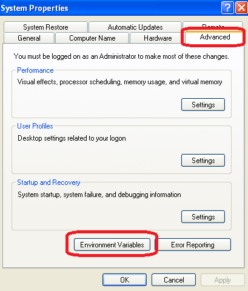 Add a system variable named « QT_DIR » :
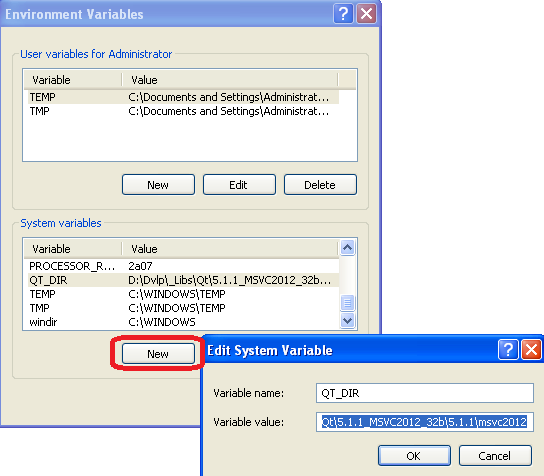 Modify the system variable « PATH » to add the following value : « ;%QT_DIR%\bin\; » 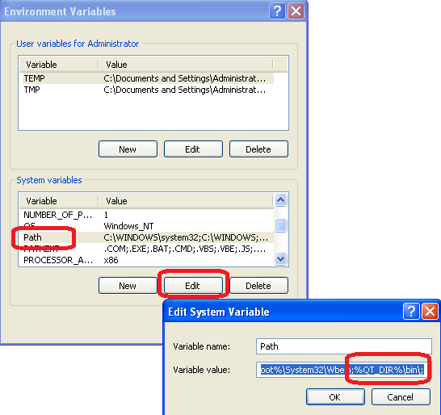 Now, Qt is available on your development environment. You can test the Qt installation opening a DOS window (« Start » menu, « Execute » then « cmd »), then execute this command : « qmake -version » : 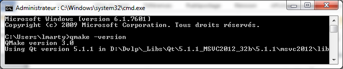 Note : Why did we add the Qt « bin » directory to the Windows « PATH » ? All executables for Qt process (qmake, moc, ui, rcc, etc.) are available everywhere on the system without having to configure other things. Moreover, it will be easier to switch to another Qt version : just modify the « QT_DIR » value to put another Qt directory. 3- Download and install boost library Note : by default, QxOrm library just needs boost header files *.hpp : boost serialization dependency is optional and not required with default configuration. So some steps about boost installation in this tutorial are optional. The fastest and easier way is to download the boost package provided by QxOrm website. The boost package can be downloaded here : http://www.qxorm.com/lib/boost_1_57.zip 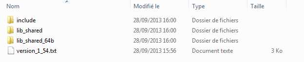 This package provides all headers files (*.hpp) from boost framework (inside « include » directory), and « boost::serialization » module compiled and built for the following environments (« lib_shared » directory for 32 bits mode and « lib_shared_64b » directory for 64 bits mode) :
4- Add boost « lib_shared » directory to the Windows « PATH » (optional) Note : this step is optional and not required by default : if you don't want to work with boost serialization features, then you can go directly to next step. Go to « System properties » Windows screen, « Advanced » tab, then click on « Environment Variables » button : Add a system variable named « BOOST_DIR » :
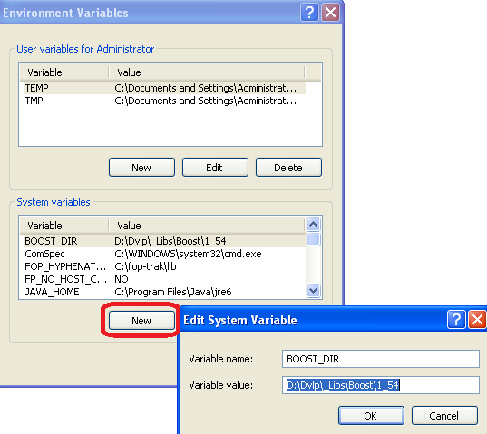 Modify the system variable « PATH » to add the following value : « ;%BOOST_DIR%\lib_shared\; » 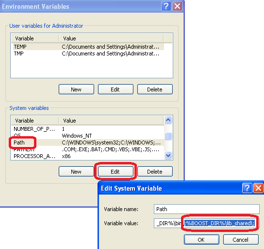 Note : you can also add the « lib_shared_64b » directory to the Windows PATH if you want to work in 64 bits mode : « ;%BOOST_DIR%\lib_shared_64b\; ». 5- Download and install QxOrm library The latest version of QxOrm library is available here : http://www.qxorm.com/qxorm_en/download.html Once downloaded, you just have to unzip it where you want. 6- Configure « QxOrm.pri » file It is necessary to indicate to QxOrm library how to access to boost configuring « QxOrm.pri » file (be careful, only « QxOrm.pri » file can be changed, all other files from QxOrm package should not be changed). Open « QxOrm.pri » file with a text editor (notepad or notepad++ for instance), then modify the value of these parameters :
Note : « QxOrm.pri » is a configuration file of QxOrm library. This file must be included in all dependents projects files (*.pro) adding the following line : include(my_path_to_QxOrm_library/QxOrm.pri) 7- Add QxOrm directory to the Windows « PATH » Like « QT_DIR » and « BOOST_DIR » variables, we will add another environment variables named « QXORM_DIR ». Go to « System properties » Windows screen, « Advanced » tab, then click on « Environment Variables » button : Add a system variable named « QXORM_DIR » :
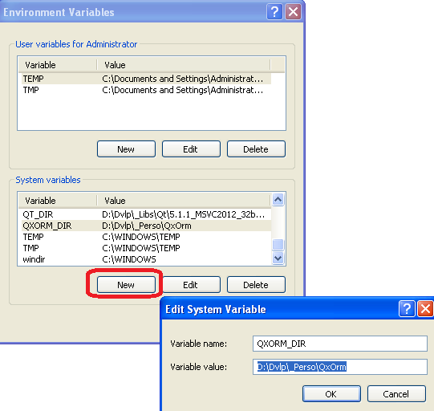 Modify the system variable « PATH » to add the following value : « ;%QXORM_DIR%\lib\; » 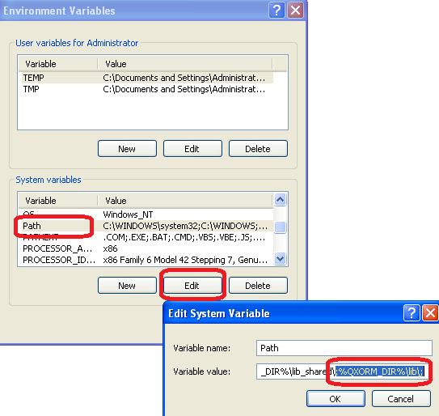 8- Test your installation executing « qxBlog » sample project To quickly test the installation, it is possible to open the project « qxBlog » of QxOrm package : open the file « ./test/qxBlog/qxBlog.sln » with MSVC++ 2012, then compile and execute the project. If you don't have any error or assert, then your development environment is ready : Qt, boost and QxOrm library are properly installed on your computer ! 9- Test all samples projects of QxOrm package with MSVC++ 2012 It is also recommended to test all samples projects of QxOrm package, each project have a « *.sln » file and can be opened with MSVC++ : all samples projects must run without any error. Note : Qt provides an Add-in for Microsoft Visual C++, so you can install it to improve Qt integration (manage automatically *.pro files for instance). To download this Add-in, go to the Qt download page : http://www.qt.io/download/ 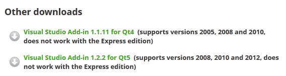 10- Test QxOrm library with QtCreator If you work with QtCreator (and not MSVC++) : run QtCreator from your Qt installation directory « .\Tools\QtCreator\bin\qtcreator.exe ». Go to « Tools >> Options » menu, then go to « Build & Run » section, « Kits » tab, to check that the MSVC++ 2012 compiler will be used by QtCreator : 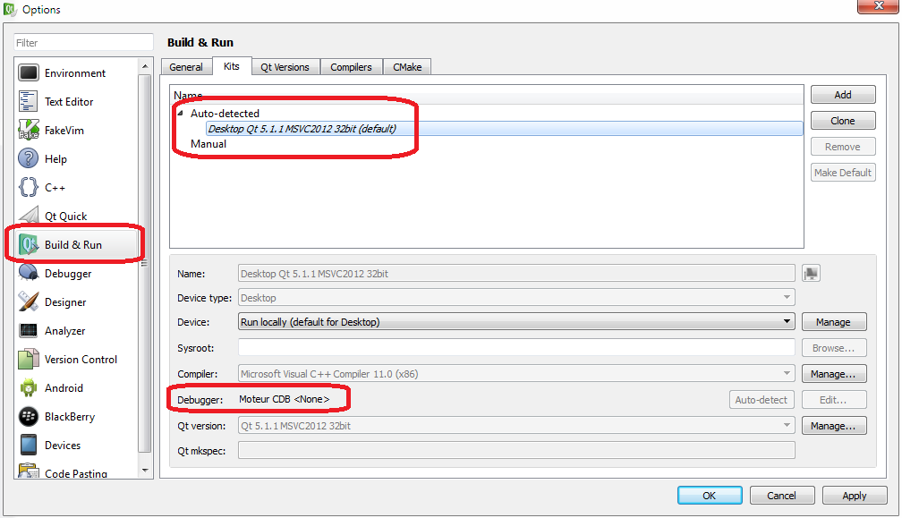 If QtCreator doesn't find any debugger (like the previous screenshot), just install « Debugging Tools for Windows SDK » available on Microsoft website (http://msdn.microsoft.com/en-us/windows/hardware/hh852363.aspx). Then restart QtCreator and you should have something like this : 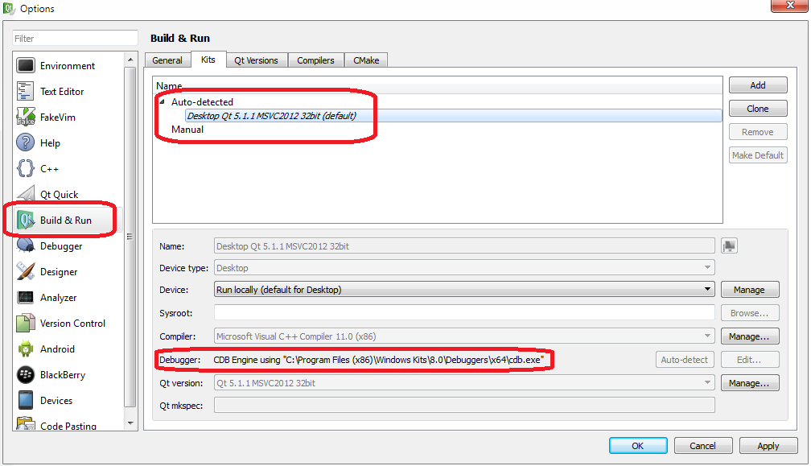 Note : you will find more details about QtCreator debugger on Qt website : http://qt-project.org/wiki/Qt_Creator_Windows_Debugging Now, you can develop with QtCreator and/or MSVC++ 2012 ! |
|
|
© 2017 Lionel Marty - contact@qxorm.com |